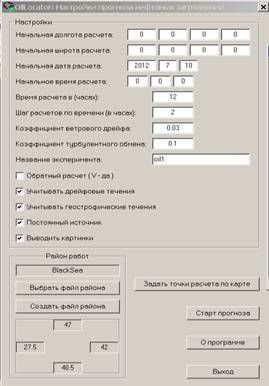
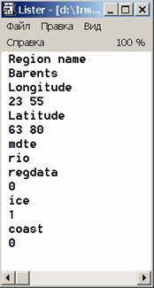
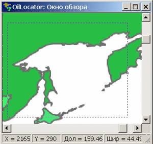
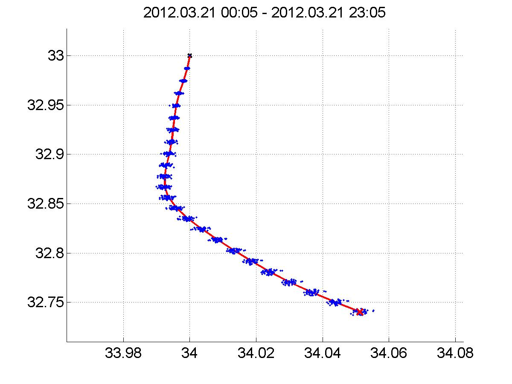
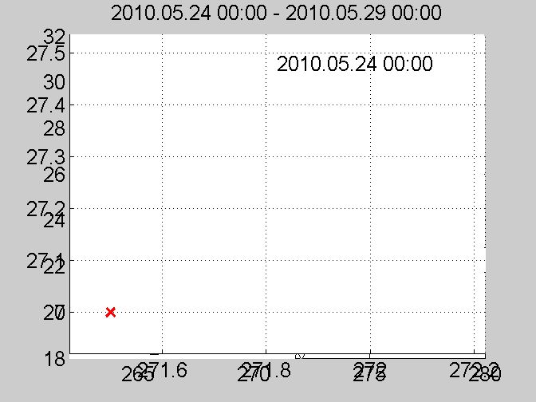
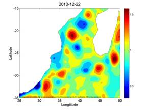
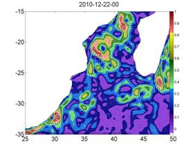
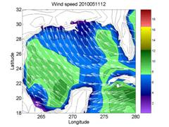
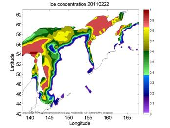

Руководство пользователя программы “СканДрифтер”
Здравствуйте уважаемые пользователи программы “СканДрифтер”. Перед Вами полное и подробное руководство пользователя, которое поможет Вам освоиться с интерфейсом и принципами работы программы.
Руководство состоит из трех основных разделов: первый, вводный, - о программе; второй - управление и интерфейс программы “СканДрифтер”; и третий - алгоритм работы программы
Раздел 1 .О программе
Для чего предназначена эта программа?
Программа “СканДрифтер” предназначена для расчета траектории распространения плавающих объектов на любой акватории Мирового Океана: например, нефтяных пятен или других загрязняющих веществ для предотвращения экологических катастроф или нахождения виновников разлива загрязнителей; нахождения обломков кораблей или самолетов, членов экипажа при спасательных операциях на море; расчета дрейфа айсбергов для обеспечения безопасности судоходства; определения воможного распространения различных биологических объектов и т.д.. Программа позволяет рассчитывать траектории распространения объектов для периода с 1998 года по сегодняшний момент времени с возможностью прогнозирования на три дня вперед от сегодняшней даты.
Создатели программы
Программа “СканДрифтер” создана в 2012 году в отделе дистанционных методов исследования Морского Гидрофизического Института Национальной Академии Наук Украины, г. Севастополь.
Руководитель разработки – кандидат физико-математических наук, старший научный сотрудник, руководитель отдела дистанционных методов исследования Станичный Сергей Владимирович
Главный разработчик - кандидат физико-математических наук, младший научный сотрудник отдела дистанционных методов исследования Кубряков Арсений Александрович
Разработчик визуального интерфейса - младший научный сотрудник отдела дистанционных методов исследования Калинин Евгений Игоревич
Раздел 2. Управление и интерфейс программы “СканДрифтер”
2.1 Инсталляция и запуск программы
Для инсталляции и запуска программы необходимо:
- Запустить файл MCRInstaller.exe для инсталляции на свой компьютер пакет бесплатных библиотек Matlab
- Скопировать содержимое папки World_oil_locator в рабочую директорию
- В случае, если для соединения с Интернетом вы используете прокси-сервер необходимо в файле proxy.stn поставить 1 после строки proxy и задать http_proxy и ftp_proxy в соответствующих строках.
Для запуска программы необходимо запустить файл World_oil_locator.exe. Перед Вами появится следующее окно:

Рис.2.1 Окно управления программой
Для начала расчетов необходимо во-первых выбрать регион исследований.
2.2 Выбор региона исследований
Для выбора региона исследований из уже ранее созданных, надо нажать на кнопку “Выбрать файл района”. Из появившегося списка надо выбрать файл с соответствующим регионом.
После выбора региона появится окно с изображением карты региона.
Если регион ранее не был создан, то необходимо создать новый регион
Параметры регионов можно посмотреть, зайдя в папку resources, и открыв любым текстовым редактором файл с соответствующим названием.
2.3 Параметры региона в текстовом файле
Параметры региона в текстовом файле выглядят так:

Рис.2.2 Пример файла региона
Region name - имя региона, используется для наименования папки с результатами расчета
Longitude – ограничение региона по долготе
Latitude– ограничение региона по широте
Mdte – средняя динамическая топография (СДТ) региона.
Возможные значения:
- rio для СДТ, восстановленной в работе [Rio, M. H., et al., 2009] для практически всех районов открытого океана
- none – в случае, если для региона не разработана СДТ, для расчета используются аномалии геострофические скорости
- В случае, если пользователь хочет использовать свою СДТ, здесь должно стоять имя ASCII файла с СДТ в формате (долгота широта уровень моря)
*Для Черного и Каспийского моря используются СДТ из файлов smdt_best6.dat и ibraev.dat, соответственно, из работ [Kubryakov, A. A. and Stanichny, S. V.,2011] и [Кныш В.В., Ибраев Р.А., 2008]
Regdata – используемый массив альтиметрических данных
Возможные значения:
- 0 – глобальный продукт с пространственным разрешением 1/3° - существует для всего Мирового океана
- blacksea – региональный продукт для Черного моря с пространственным разрешением 1/8°
- mfstep – региональный продукт для Средиземного моря с пространственным разрешением 1/8°
ice - флаг для учета ледовой обстановки в регионе (0 – не учитывать лёд; 1- учитывать лёд)
coast – выбор береговой линии
Возможные значения:
- 0 – глобальный продукт Global Self-consistent Hierarchical High-resolution Shorelines - среднее разрешение (intermediate resolution) существует для всего Мирового океана
- В случае, если пользователь хочет использовать свою береговую линию, здесь должно стоять имя ASCII файла, в формате (долгота широта) описанная полигонами по часовой стрелке.
2.4 Создание нового региона
Для создания нового региона необходимо нажать на кнопку «Создать файл района»
Перед Вами появится окно

Рис. 2.3 Окно создания нового региона
В поле Region name надо ввести название региона, соответствующее имени текстового файла в папке resources и параметру Region name текстового файла (см. Параметры региона в текстовом файле)
Для задания ограничивающих координат района по выбору пользователя:
- Ввести координаты вручную в формы Longitude и Latitude
- Для визуального выбора района нажать на кнопку “Selection of region borders on the map”. Для ограничения области региона в появившемся окне зажав левую кнопку мыши тащить курсор из одного угла области в другой. Для увеличения/уменьшения масштаба карты используются кнопки Page Up/ Page Down. Выбранные ограничивающие координаты отобразятся в полях Longitude и Latitude

Рис. 2.4 Процедура выбора района
В поле MDT выбрать используемую среднюю динамическую топографию (СДТ) региона.
Возможные значения:
- MDT-CNES-CLS09 (значение rio в текстовом файле) для СДТ, восстановленной в работе [Rio, M. H., et al., 2009], существующей для практически всех районов открытого океана
- none – в случае, если для региона не разработана СДТ, для расчета используются аномалии геострофические скорости
- Other data - В случае, если пользователь хочет использовать свою СДТ, в соседнем окне (пример на рисунке 3.5) должно стоять имя ASCII файла с СДТ в формате (долгота широта уровень моря)

Рис. 2.5 Выбор СДТ из файла
*Для Черного и Каспийского моря используются СДТ из файлов smdt_best6.dat и ibraev.dat, соответственно, из работ [Kubryakov, A. A. and Stanichny, S. V.,2011] и [Кныш В.В., Ибраев Р.А., 2008]
В поле задатьиспользуемый массив альтиметрических данных
Возможные значения:
- Global – глобальный продукт с пространственным разрешением 1/3° - существует для всего Мирового океана
- Black Sea – региональный продукт для Черного моря с пространственным разрешением 1/8°
- Mediterranean Sea – региональный продукт для Средиземного моря с пространственным разрешением 1/8°
Флаг ice - флаг для учета ледовой обстановки в регионе (0 – не учитывать лёд; 1- учитывать лёд)
coastline – выбор береговой линии
Возможные значения:
- default – глобальный продукт Global Self-consistent Hierarchical High-resolution Shorelines - среднее разрешение (intermediate resolution) существует для всего Мирового океана
- В случае, если пользователь хочет использовать свою береговую линию, здесь должно стоять имя mat файла, в формате (долгота широта) описанная полигонами по часовой стрелке.
Для сохранения региона нажать кнопку Save
2.5 Задание параметров расчета
После выбора региона необходимо задать параметры расчета:

Рис.2.6 Окно управления программой
2.6 Задание начальных координат плавающего объекта
Задание начальных координат плавающего объекта может быть произведено вручную, либо с помощью графического интерфейса
Для ввода координат вручную необходимо ввести координаты в поля “Начальная долгота расчета” и “Начальная широта расчета”
Для ввода координат с помощью графического интерфейса необходимо нажать на кнопку “Задать точки расчета по карте” и далее левой кнопкой мыши отметить координаты на карте.
В программе реализована возможность расчета как для мгновенного источника, так и для постоянного источника. Для расчета для постоянного источника необходимо установить флаг постоянный источник.
2.7 Расчет для мгновенного источника
- При задании одной начальной точки моделируется распространение точечного объекта. При этом в начальных координатах запускается 50 точечных объектов. Для учета влияния подсеточных факторов, т.е турбулентности, каждая точка, кроме первой, на каждом шаге расчета дополнительно перемещается в произвольном направлении на величину пропорциональную произведению скорости объекта на данном шаге расчета и коэффициенту турбулентного обмена. Первая точка не испытывает дополнительных перемещений и определяет центр масс распространяющегося объекта.
- При задании двух точек расчет делается для линейного объекта (две точки задают концы линии). Линия разбивается на 10 точек и расчет производится для каждой из этих точек.
- При задании трех и более точек каждая точка задает вершины многоугольника. Каждая сторона многоугольника разбивается на 10 точек и расчет производится для каждой из этих точек.
 
 Рис 2.7. Пример расчета для точечного объекта(слева), линейного объекта(в центре), объекта произвольной формы (справа)
Рис 2.7. Пример расчета для точечного объекта(слева), линейного объекта(в центре), объекта произвольной формы (справа)
2.8 Расчет для постоянного источника
При установке флага напротив поля постоянный источник расчет производится для постоянного источника плавающих объектов. При этом каждый шаг по времени из каждой заданной точки выпускается новый плавающий объект (см. рис. 2.8)

Рис 2.8. Пример расчета для постоянного источника
2.9 Задание остальных параметров расчета
Начальная дата и время расчета задаются, соответственно, в полях “Начальная дата расчета” и “Начальная время расчета”. Время на которое задается расчет задается в поле “Время расчета (в часах)”.
Шаг расчетов по времени(в часах) задается в поле “Шаг расчетов по времени(в часах)”. Чем меньше шаг по времени, тем расчет точнее и тем большее время требуется для расчета.
Следующее поле “Коэффициент ветрового дрейфа” определяет отношение скорости ветра к скорости дрейфа объекта (см. раздел Расчет дрейфовых течений). По умолчанию этот коэффициент равен 0.03, и это значение рекомендуется использовать для расчета передвижения пленок, загрязняющих веществ и т.п. Для расчета распространения объектов обладающих парусностью (с выделяющимися над водой частями) этот коэффициент может быть увеличен.
Поле “Коэффициент турбулентного объема” используется при расчете распространения от мгновенного точечного источника. При этом в начальных координатах запускается 50 точечных объектов. Для учета влияния подсеточных факторов, т.е турбулентности, каждая точка, кроме первой, на каждом шаге расчета дополнительно перемещается в произвольном направлении на величину пропорциональную произведению скорости объекта на данном шаге расчета и коэффициенту турбулентного обмена. Первая точка не испытывает дополнительных перемещений и определяет перемещение центра масс распространяющегося объекта.
Поле “Название эксперимента” используется при сохранении результатов расчета в названии графических и текстовых файлов.
Флаг “Обратный расчет”. При установке этого флага расчет производится в обратном направлении, т.е строится траектория, определяющая, откуда пришел объект, если он был запущен в прошлом заданное время расчета назад.
Флаг “Учитывать дрейфовые течения” и флаг “Учитывать геострофические течения” по умолчанию являются установленными. Если пользователь желает определить влияние только одного из этих факторов на перемещение объекта, соответствующий флаг должен быть отключен.
Флаг “Постоянный источник”. При включении этого флага расчет производится для постоянного источника объектов (см. выше).
Флаг “Выводить картинки”. При включении этого флага во время расчета на экран монитора выводятся карты течений и ветра.
2.9 Запуск расчета
Для запуска расчета необходимо нажать кнопку “Старт”.
Раздел 3. Алгоритм работы программы
При нажатии на кнопку старт программа, используя Интернет, обращается к бесплатным архивам спутниковых и метеорологических данных; скачивает необходимые массивы данных; вырезает данные по нужному району; используя полученные данные, определяет и визуализирует поля поверхностных течений (см. физические принципы работы программы);сохраняет полученные карты в формате ASCII и jpg; рассчитывает траекторию распространения плавающих объектов; сохраняет результаты расчета в текстовом и графическом формате (подробнее см. ниже).
Пошаговый алгоритм:
- 3.1 Создание рабочих директорий. Если для заданного района расчет производится впервые, то в рабочей директории создается папка с названием района работ и поддиректориями dat, jpg, и results_oil_location в которых будут хранится карты течений и ветра в текстовом и графическом формате и результаты расчета траекторий, соответственно.
- 3.2 Создание береговой линии региона. Если для заданного района береговая линия раннее не была создана, то из глобального массива береговой линии Global Self-consistent Hierarchical High-resolution Shorelines - среднее разрешение (intermediate resolution) вырезается массив береговых точек соответствующий выбранному району. Этот массив сохраняется в папке с названием района работ в файле с названием *имя региона*_coast.mat.
- 3.3 Анализ имеющихся данных. Программа анализирует уже загруженные в компьютер пользователя данные из папки dat. Если для заданного временного интервала нужные данные уже загружены, программа переходит к расчету траекторий (шаг 7). Если не все данные для заданного промежутка времени загружены на компьютер, программа переходит к закачке недостающих данных со спутниковых и метеорологических архивов.
- 3.4 Расчет поверхностных геострофических течений . Для расчета геострофических скоростей программа обращается к бесплатному архиву данных Aviso (http://www.aviso.oceanobs.com). Из архива скачиваются региональные или глобальные (в зависимости от заданных параметров региона) карты аномалий уровня моря (MSLA) или карты абсолютной динамической топографии (MADT), полученные по данным спутниковой альтиметрии. Для расчета абсолютной динамической топографии по данным об аномалиях уровня к картам аномалий прибавляется заданное поле средней динамической топографии региона. Из уравнения геострофического баланса по градиентам абсолютной динамической топографии определяются скорости поверхностных геострофических течений. Карты абсолютной динамической топографии и поверхностных геострофических течений сохраняются в папках *имя региона*/dat/adt и *имя региона*/dat/geovel/ в формате ASCII, и в папках jpg/adt и jpg/geovel/ в формате jpg/. В зависимости от уровня обработки альтиметрических данных, карты сохранятся в папки dt_upd (delayed time – полная обработка, временное разрешение 7 дней) или nrt (Near Real Time, неполная обработка, временное разрешение 1 день).
 
Рис. 3.1 Пример построенных карт – абсолютная динамическая топография (слева), геострофическая скорость (справа)
- 3.5 Расчет дрейфовых поверхностных течений. Для расчета дрейфовых скоростей используются данные модели NCEP. Если выбранная дата расчета приходится на даты менее, чем 30 дней от сегодняшней, то программа скачивает данные по скорости ветра с бесплатного архива данных NOMADS (http://nomads.ncep.noaa.gov/) (пространственное разрешение данных по ветру 1/2°, доступные с -30 дней до +3 дня(прогноз) от сегодняшней даты). Карты скорости ветра в этом случае сохраняются в папках *имя региона*/dat/wind/nomads в формате ASCII, и в папках *имя региона*/jpg/wind/Nomads в формате jpg.
Если дата расчета приходится на даты более, чем 30 дней от сегодняшней, то программа скачивает данные по скорости ветра с бесплатного архива данных oceandata (http://oceandata.sci.gsfc.nasa.gov/)(пространственное разрешение данных по ветру 1°, доступные 1998 года по сегодняшний день). Карты скорости ветра в этом случае сохраняются в папках dat/wind/NCEP в формате ASCII, и в папках jpg/wind/NCEP в формате jpg.


Рис. 3.2 Пример построенных карт скорости ветра NOMADS (слева), NCEP (справа)
Используя закаченные данные о скорости ветра, параметризацию, предложенную в работе [Stanichny S.V., Kubryakov A.A. in press] и заданное значение коэффициента ветрового дрейфа определяются карты дрейфовых течений.
- 3.6 Расчет характеристик ледовой обстановки. При установленном флаге лёд в параметрах региона программа учитывает ледовую обстановку в регионе.Для определения акватории занятой льдом используются данные из архива ftp://ladsweb.nascom.nasa.gov/ о концентрации льда с пространственным разрешением 0.5° и временным 1 день, определенные по измерениям спутника MODIS. Акватория с ненулевой концентрацией льда считается твердой, и объект не может передвигаться по ней.
Карты концентрации льда сохраняются в папках *имя региона*/dat/ice в формате ASCII, и в папках *имя региона*/jpg/ice в формате jpg.

Рис. 4.3 Пример построенной карты концентрации льда
- 3.7 Расчет полных поверхностных. Сумма геострофических скоростей, восстановленных по данным альтиметрии и дрейфовых скоростей, рассчитанных по полям ветра, определяет полную поверхностную скорость течений. Карты полной поверхностной скорости течений сохраняются в папках *имя региона*/dat/surf/ в формате ASCII, и в папках *имя региона*/jpg/surf/ в формате jpg.

Рис. 4.4 Пример построенной карты полных поверхностных течений
- 3.8 Расчет траекторий плавающих объектов. Траектория распространения объекта определяется по рассчитанным полям полных поверхностных скоростей течений по схеме Эйлера. При этом скорости линейно интерполируются на время и местоположение объекта. На твердых границах (берегах) поставлено условие скольжение объекта, т.е нормальная составляющая скорости объекта к берегу равна 0.
- 3.9 Визуализация результатов расчета Результаты расчета траектории выводятся на экран в виде трех графиков (уменьшенный масштаб, увеличенный масштаб, анимация). Эти графики можно увеличивать/уменьшать, поворачивать по желанию пользователя.
- 3.9 Сохранение результатов расчета. Траектории расчета сохраняются в папке *имя региона*\results_oil_location\dat в формате ASCII в файлах surf_tr_*название эксперимента*.dat и surf_tr_*название эксперимента*.bln. Файл surf_tr_*название эксперимента*.dat имеет формат (год \месяц \день \час \минута \долгота \широта \номер точки). Файл surf_tr_*название эксперимента*.bln имеет стандартный формат bln для программы Surfer.
В графическом формате файлы сохраняются в папке *имя региона*/results_oil_location в форматах jpg и gif в файлах surf_vel_*название эксперимента*.jpg, surf_vel_*название эксперимента*_zoom.jpg и surf_vel_*название эксперимента*.gif . В этих файлах изображены, соответственно, рассчитанные траектории, рассчитанные траектории в увеличенном масштабе и анимация перемещения объектов. Для расчета точечного мгновенного источника красная линия изображает перемещение центра масс объекта.
Список литературы
- Кныш В.В., Ибраев Р.А., Коротаев Г.К., Инюшина Н.В. Сезонная изменчивость климатических течений Каспийского моря, восстановленная ассимиляцией климатической температуры и солёности в модели циркуляции вод // Известия РАН. ФАО. 2008. 44 (2). 251-265.
- Kubryakov, A. A. and Stanichny, S. V.: Mean Dynamic Topography of the Black Sea, computed from altimetry, drifter measurements and hydrology data, Ocean Sci., 7, 745-753, doi:10.5194/os-7-745-2011, 2011
- Rio, M. H., S. Guinehut, and G. Larnicol (2011), New CNES-CLS09 global mean dynamic topography computed from the combination of GRACE data, altimetry, and in situ measurements, J. Geophys. Res., 116, C07018, doi:10.1029/2010JC006505.
- Stanichny S.V., Kubryakov A.A. in press, Parameterization of wind-driven currents in the Black Sea using altimetry, drifters and wind data, J. Geophys. Res.